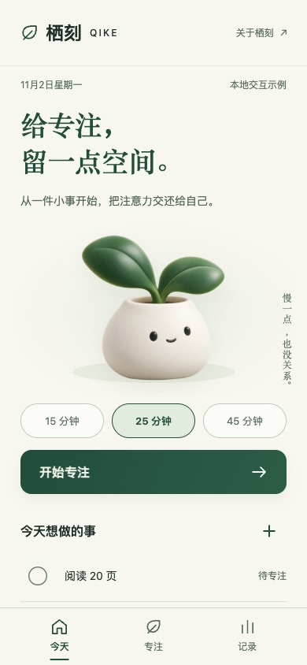
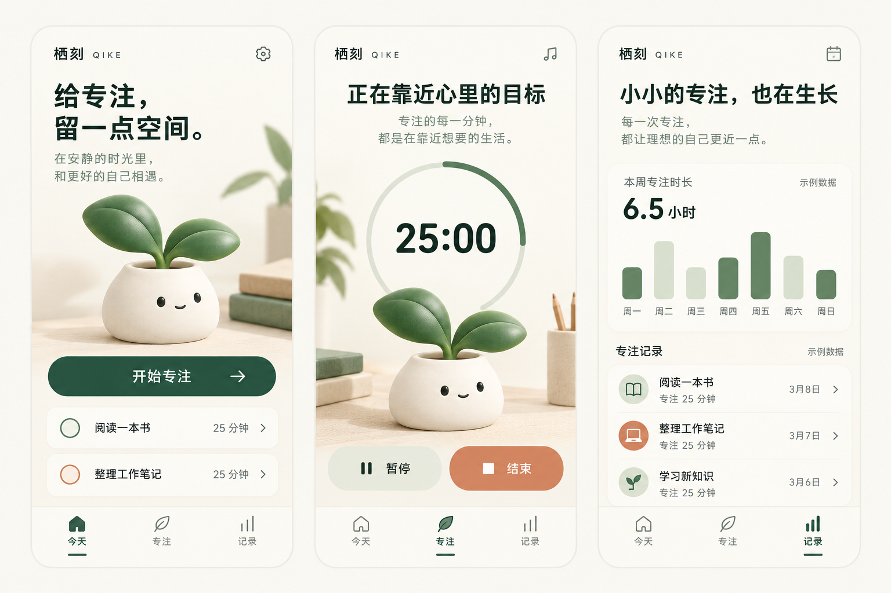
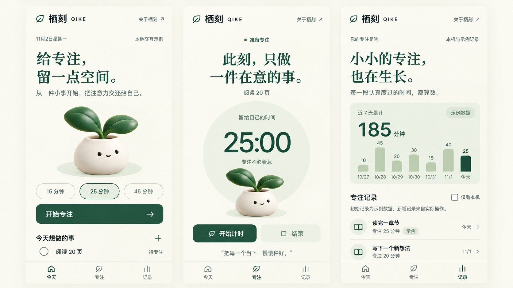

同一个栖刻，两种表达。
同一任务、文案、业务代码与品牌 IP。1.1 保留平静纸本风格，1.2 显式选择浅色科技精修；下面展示真实代码截图。
1.1.0 · calm

1.2.0 · tech-refined

看见差异，也保留边界。
更换 tone 是本次对照变量，截图不同不等于新版本普遍更好。文件契约检查用于核对相同产品、状态、业务与素材、实际图片尺寸；它不会评出视觉优劣。
以下为 AI 方向稿，仅作设计参考，和上面的真实界面截图分别记录。初始专注统计为示例数据。

